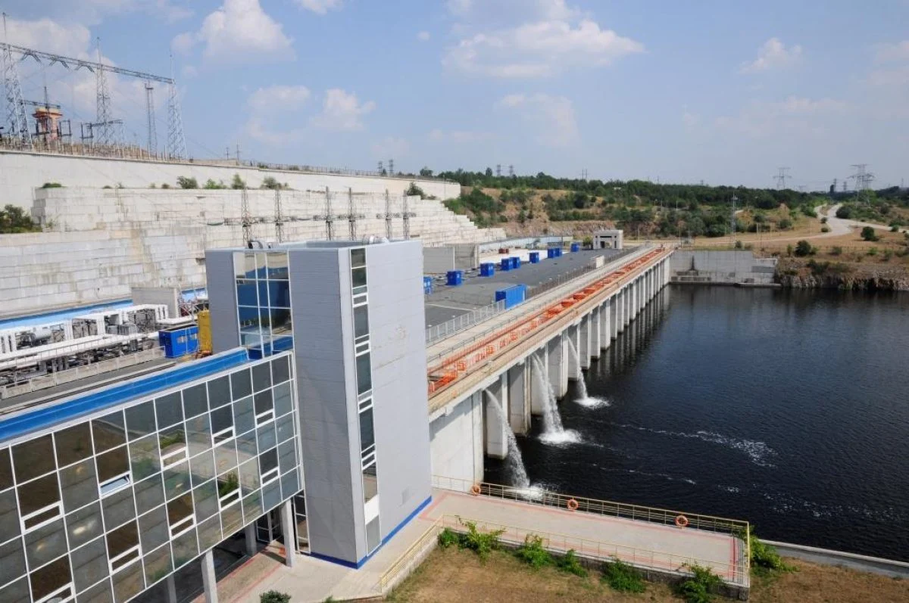
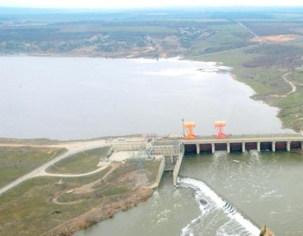

Ташлицька ГАЕС
Гідроакумулювальна електростанція потужністю 302 МВт у Миколаївській області
Дізнатися більшеПро об'єкт
Ташлицька гідроакумулювальна електростанція (ГАЕС) — це стратегічно важливий енергетичний об'єкт, розташований у Миколаївській області, поблизу міста Південноукраїнськ. Спорудження станції почалося в 1981 році. Станція є невід'ємною частиною Південноукраїнського енергетичного комплексу. Її головне призначення полягає в покритті пікових навантажень в Об'єднаній енергетичній системі України, а також у забезпеченні надійного базисного режиму роботи атомних енергоблоків Південноукраїнської АЕС.
Принцип роботи ГАЕС базується на перекачуванні води між двома резервуарами різного рівня. У період нічного «провалу» енергоспоживання станція використовує надлишок електроенергії для закачування води з нижнього водоймища (Олександрівського водосховища) у верхнє (Ташлицьке). Під час вечірніх або ранкових піків споживання вода скидається назад через гідроагрегати, генеруючи необхідну системі електроенергію з напругою 15,75/330 кВ та загальною встановленою потужністю в генераторному режимі 302 МВт.
Технічні параметри
| Параметр | Значення |
|---|---|
| Розташування | Миколаївська область, Україна |
| Встановлена потужність (генераторний режим) | 302 МВт |
| Клас напруги | 15,75 / 330 кВ |
| Рік введення в експлуатацію | 2006 |
| Тип ГЕС | Гідроакумулююча |
| Розрахований напір | 88,3 м |
| Тип турбін | Оборотні |
| Основні режими роботи | Генераторний та насосний |
| Кількість гідрогенераторів | 3 |
| Висота греблі | 50 м |
| Довжина греблі | 1400 м |
| Статус об'єкта | В експлуатації (будуються додаткові гідроагрегати) |
Обладнання
Ташлицька ГАЕС оснащена високоманевреними гідроагрегатами (насос-турбінами), що працюють у генераторному та насосному режимах. Основне обладнання для агрегатів №1-2 постачала австрійська компанія ANDRITZ HYDRO GmbH. Комплекс включає електротехнічне обладнання (блокові трансформатори, щити керування), насос-турбіни, двигуни-генератори, системи забезпечення енергопостачання та дизельгенераторні станції.
Фотогалерея

Головний корпус та машинний зал станції

Верхнє водоймище (Ташлицьке)